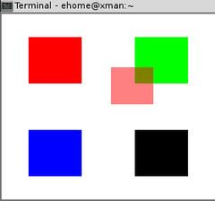
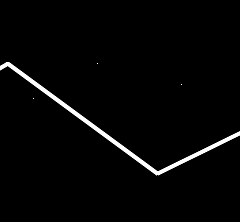

混合
我们已经了解，通常情况下OpenGL渲染时会把颜色值放在颜色缓冲区中，把每个片段的深度值放在深度缓冲区中。
- 当深度缓冲区关闭时，新的颜色值简单地覆盖颜色缓冲区中的已经存在的其他值。
- 当深度缓冲区打开时，新的颜色片段只有当它们比原来的值更接近临近的裁剪平面时才会替换原来的颜色片段。
因此，在正常情况下，任何绘制操作不是被完全丢弃，就是完全覆盖原来的颜色值，这取决于深度测试的结果。
而如果打开了OpenGL的混合功能，那么下层的颜色值就不会被清除。
glEnable(GL_BLEND);
在打开混合功能的情况下，新的颜色会与已经存在的颜色值在颜色缓冲区中进行组合。这些颜色的组合方式不同会导致很多不同的特殊效果。
Table of Contents
1 组合颜色
首先介绍一下新输入颜色值和已经存在颜色值的正式术语：
- 目标颜色：已经存储在颜色缓冲区中的颜色值。这个颜色值包含了单独的红、绿、蓝成分以及一个可选的alpha值；
- 源颜色：作为当前渲染命令的结果进入颜色缓冲区的颜色值称为源颜色，它可能与目标颜色进行交互，也可能不与之进行交互。源颜色也可以包含3种或4种颜色成分（红、绿、蓝和可选的alpha成分）。请注意，任意情况下只要我们忽略一个alpha值，OpenGL都会将它设为1.0。
当混合功能被启用时，源颜色和目标颜色的组合方式是由混合方程式控制的。在默认情况下，混合方程式如下所示。
\[ Cf = (Cs * S) + (Cd * D) \]
其中，\(Cf\)是最终计算产生的颜色，\(Cs\)是源颜色，\(Cd\)则是目标颜色，\(S\)和\(D\)分别是源和目标混合因子。这些混合因子是用下面这个函数进行设置的。
glBlendFunc(GLenum S, GLenum D);
正如我们所看到的那样，\(S\)和\(D\)都是枚举值，而不是可以直接指定的实际值。
下表列出了混合函数可以使用的值。其中下标表示源、目标和颜色（对于混合颜色后面再讨论）。
| 函数 | RGB混合因子 | Alpha混合因子 |
|---|---|---|
| GL_ZERO | (0,0,0) | 0 |
| GL_ONE | (1,1,1) | 1 |
| GL_SRC_COLOR | (Rs,Gs,Bs) | As |
| GL_ONE_MINUS_SRC_COLOR | (1,1,1)-(Rs,Gs,Bs) | 1-As |
| GL_DST_COLOR | (Rd,Gd,Bd) | Ad |
| GL_ONE_MINUS_DST_COLOR | (1,1,1)-(Rd,Gd,Bd) | 1-Ad |
| GL_SRC_ALPHA | (As,As,As) | As |
| GL_ONE_MINUS_SRC_ALPHA | (1,1,1)-(As,As,As) | 1-As |
| GL_DST_ALPHA | (Ad,Ad,Ad) | Ad |
| GL_ONE_MINUS_DST_ALPHA | (1,1,1)-(Ad,Ad,Ad) | 1-Ad |
| GL_CONSTANT_COLOR | (Rc,Gc,Bc) | Ac |
| GL_ONE_MINUS_CONSTANT_COLOR | (1,1,1) | 1-Ac |
| GL_CONSTANT_ALPHA | (Ac,Ac,Ac) | Ac |
| GL_ONE_MINUS_CONSTANT_ALPHA | (1,1,1)-(Ac,Ac,Ac) | 1-Ac |
| GL_SRC_ALPHA_SATURATE | (f,f,f)1 | 1 |
请记住，颜色是用浮点数表示的。因此，对它们进行加减甚至乘法都是完全合法的。上表看上去有点令人困惑，因此让我们通过一个常见的混合函数组合来举例和说明。
glBlendFunc(GL_SRC_ALPHA, GL_ONE_MINUS_SRC_ALPHA);
这个函数告诉OpenGL接受源颜色并将这个颜色（RGB值）与alpha值相乘，然后把这个结果加上目标颜色乘以“1减去源颜色的alpha值”的结果。
例如，如果颜色缓冲区中已经有一种红色（1.0f,0.0f,0.0f,0.0f），这是目标颜色（Cd）。如果在这上面用一种alpha值为0.6的蓝色(0.0f,0.0f,1.0f,0.6f)画了一些什么东西，就可以像下面这样计算最终颜色。
\[ \begin{array} Cd & = & \mbox{目标颜色} & = & (1,0f, 0.0f, 0.0f, 0.0f) \\ Cs & = & \mbox{源颜色} & = & (0.0f, 0.0f, 1.0f, 0.6f)\\ S & = & \mbox{源alpha值} & = & 0.6 \\ D & = & 1 - \mbox{源alpha值} & = & 1.0 - 0.6 = 0.4 \end{array} \]
现在，下面这个方程式
\[ Cf = (Cs * S) + (Cd * D) \]
等价于
\[ Cf = (Blue * 0.5) + (Red * 0.4) \]
最终的颜色就是原先的红色（目标颜色）与后来的蓝色（源颜色）进行缩放后的组合。
这个混合函数经常用于实现在其他一些不透明的物体前面绘制一些透明物体的效果。但是，这种技巧需要首先绘制一个或多个背景物体，然后再在上面绘制经过混合的透明物体。
2 示例程序
2.1 代码
CANNOT INCLUDE FILE ./program/opengl/Src/Chapter03/Blending/Blending.cpp
2.2 Makefile
2.3 输出

可移动的红色矩形与背景颜色进行混合
3 改变混合方程式
我们前面已经介绍的混合方程式
\[ Cf = (Cs * S) + (Cd * D) \]
是默认方程式。实际上，我们可以从5个不同的混合方程式中进行选择。下表列出了这些方程式，我们可以通过下面的函数进行选择。
void glBlendEquation(GLenum mode);
| 模式 | 函数 |
|---|---|
| GL_FUNC_ADD | Cf = (Cs*S) + (Cd*D) |
| GL_FUNC_SUBTRACT | Cf = (Cs*S) - (Cd*D) |
| GL_FUNC_RESERVE_SUBTRACT | Cf = (Cd*D) - (Cs*S) |
| GL_MIN | Cf = min(Cs, Cd) |
| GL_MAX | Cf = max(Cs, Cd) |
除了 glBlendFunc 之外，还可以利用下面的函数更加灵活的进行选择。
void glBlendFuncSeparate(GLenum srcRGB, GLenum dstRGB, GLenum srcAlpha, GLenum dstAlpha);
glBlendFunc 函数指定了源和目标RGBA值的混合函数，而 glBlendFuncSeparate 函数则允许为RGB和alpha成分单独指定混合函数。
最后，如上表所示， GL_CONSTANT_COLOR 、 GL_ONE_MINUS_CONSTANT_COLOR 、 GL_CONSTANT_ALPHA 和 GL_ONE_MINUS_CONSTANT_ALPHA 值都允许在混合方程式中引入一个常量混合颜色。这个常量混合颜色初始为黑色(0.0f,0.0f,0.0f,0.0f)，但可以用下面这个函数对它进行修改。
void glBlendColor(GLclampf red, GLclampf green, GLclampf blue, GLclampf alpha);
4 抗锯齿
4.1 抗锯齿的本质
为了消除图元之间的锯齿状边缘，OpenGL使用混合功能来混合片段的颜色，也就是把像素的目标颜色与周围像素的颜色进行混合。从本质上来说，在任何图元的边缘上，像素颜色会稍微延伸到相邻的像素。 抗锯齿通常用于点和线的平滑处理 ，而多边形的平滑处理通常使用 多重采样 技术。
4.2 开启抗锯齿
开启抗锯齿功能非常简单。首先，我们必须启用混合功能，并像前一节实现透明一样设置混合函数。
glEnable(GL_BLEND); glBlendFunc(GL_SRC_ALPHA, GL_ONE_MINUS_SRC_ALPHA);
我们还需要确保把混合方程式设置为 GL_ADD ，不过由于这是默认的设置，也是最为常见的混合方程式，因此我们就不在这里显示这个步骤了。在启用混合功能并选择正确的混合函数以及混合方程式之后，可以选择调用 glEnable 函数对点、直线和（或）多边形（任何实心图元）进行抗锯齿处理。
glEnable(GL_POINT_SMOOTH); glEnable(GL_LINE_SMOOTH); glEnable(GL_POLYGON_SMOOTH);
在使用 GL_POLYGON_SMOOTH 时候应该注意。读者可能想用它使实心几何图元的边缘变得平滑。但是要实现这个目的，还需要其他乏味的规则。例如，重叠的几何图形需要一种不同的混合模式，并可能在很大程度上从前到后排序。我们对此不必钻研过深，因为对实心物体进行抗锯齿处理并不常用，我们在使用重叠的抗锯齿直线时仍然可能遇到这种重叠的几何图形问题。
4.3 代码
CANNOT INCLUDE FILE ./program/opengl/Src/Chapter03/Smoother/Smoother.cpp
4.4 Makefile
4.5 输出

锯齿消失了
5 多重采样
多重采样时OpenGL在1.3之后实现的特性，它可以更好地实现多边形的平滑处理。如果读者所使用的OpenGL实现支持这个特性，已经包含了颜色、深度和模板值的帧缓冲区就会添加一个额外的缓冲区。所有的图元在每个像素上都进行了多次采样，其结果就存储在这个缓冲区中。每次当这个像素进行更新时，这些采样值进行解析，以产生一个单独的值。因此，从程序员的角度而言，它就像是自动的，属于“幕后发生的事情”。很自然，这种处理会带来额外的内存和处理器开销，有可能对性能造成影响。因此，有些OpenGL实现可能并不支持多渲染环境中的多重采样。
5.1 请求多重采样缓冲区
glutInitDisplayMode(GLUT_DOUBLE | GLUT_RGB | GLUT_DEPTH | GLUT_MULTISAMPLE);
5.2 打开/关闭多重采样
可以使用glEnable/glDisable组合（使用 GLUT_MULTISAMPLE 标记）打开或关闭多重采样。
glEnable(GLUT_MULTISAMPLE);
或
glDisable(GLUT_MULTISAMPLE);
5.3 注意
关于多重采样还需要注意的一个地方是当它被启用时，点、直线和多边形的平滑特定都将被忽略。这意味着在使用多重采样时，就不能同时使用电和直线的平滑处理。在一种特定的OpenGL实现中，点和直线的平滑处理效果可能比多重采样好。因此，当绘制点和直线时，可以关闭多重采样，在绘制其他实心几何图形时再打开多重采样。下面这段伪代码大致展示了这种做法。
glDisable(GL_MULTISAMPLE); glEnable(GL_POINT_SMOOTH); // Draw some smooth points // ... glDisable(GL_POINT_SMOOTH); glEnable(GL_MULTISAMPLE);
当然，如果没有多重采样缓冲区，OpenGL就当做 GL_MULTISAMPLE 是被禁用的。
5.4 优化多重采样操作
多重采样缓冲区在默认情况下使用片段的RGB值，并不包括颜色的alpha成分。我们可以通过调用 glEnable （使用下面3个值之一）来修改这个行为。
GL_SAMPLE_ALPHA_TO_CONVERAGE—— 使用 alpha 值；GL_SAMPLE_ALPHA_TO_ON—— 将 alpha 值设为1并使用它；GL_SAMPLE_COVERAGGE—— 使用 glSampleCoverage 所设置的值
当启用 GL_SAMPLE_COVERAGE 时， glSampleCoverage 函数允许指定一个特定的值，它是与片段覆盖值进行 按位与操作 的结果。
void glSampleCoverage(GLclampf value, GLboolean invert);
这种对多重采样操作的优化并不是严格由 OpenGL 规范所规定的，其确切的结果可能因不同的OpenGL实现而异。
Footnotes:
1 其中\(f=min(As, 1-Ad)\)